← 返回阅读库 · 原论文目录
论文讲解阅读文档 · 多模态语言模型 · v032
VATT Video-Audio-Text Transformer[2104.11178]
视频时长 00:11:58；讲解文字 6,047 字符；提取讲解画面 30 张。按视频原顺序阅读，每段文字保留时间戳。
文字来自整段视频的自动语音转写，按自然停顿分段，并与 PPT / 论文页面 / 演示画面对齐。未将讲解压缩为摘要；术语、数字和口述公式请结合画面及原论文核对。 阅读稿已校正规范部分明确术语误识别；原始逐字稿和每处修改记录另行保留。
讲解画面为源视频截图（640×360），不是可编辑 PPT 文件。全片按每秒 2 帧扫描内容变化，逐步展开页保留；连续动画保留代表画面。清晰度受源视频限制。
下载完整资料包 · 含离线 HTML、PDF、Word、全部 PPT 画面和字幕。
原论文与材料
VATT: Transformers for Multimodal Self-Supervised Learning from Raw Video, Audio and Text · 下载完整 PDF（20 页）
按时间阅读
00:00:00–00:00:50 · 画面 001
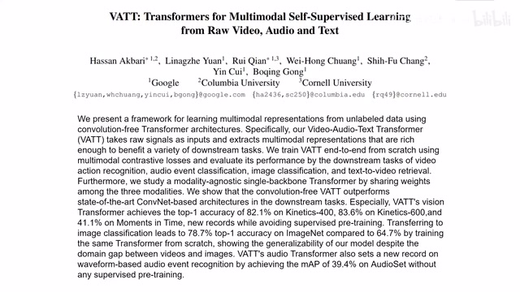
00:00:00–00:00:50 · 画面 001大家好,今天我们来介绍 VATT: Transformers for Multimodal Self-Supervised LearningFrom Raw Video, Audio and Text。那么这篇论文呢,你从题目中也可以看出来，首先它是一个 Self-Supervised Learning，更确切的来说呢，它是用了 Contrastive Learning 来学到一个好的 Representation。这并没有什么稀奇的，那么本文的亮点呢，就是它把原始的视频、音频还有描述这个画面或者声音的这么一个叙述的文字给它们一起
都放到我们的 Transformer 里面，然后呢去做 multimodal 的学习，这样子呢期望我们的 model 呢能在这个视频、音频和 text 之间他们建立相互的联系，方便我们的下游，比如说像 v6 的 trail 这样的任务。但同时呢，我把多种模态集合在一起的话，理论上呢也是能够帮助我们学到一个更好的 representation。那么在今天视频中呢，我们首先会介绍本文的框架以及它节约内存、提高处理速度的这个 drop token，其实就是 Transformer 里面的 dropout。
00:00:50–00:01:10 · 画面 002
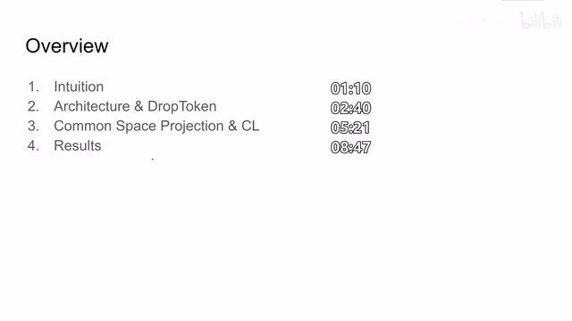
00:00:50–00:01:10 · 画面 002然后介绍作者怎么样把不同模态的 feature 投到一个共同的 latent space 里面，然后在这个 latent space 里面做 contrastive learning。最后是作者汇报的一些结果。首先看到作者为什么要搞这个事情，我们拿到一个视频来讲，如果单纯看画面往往是不能充分的理解到视频中的信息的，你必须配上相应的音频或者说在旁边的描述的文字你才能更好地理解这个视频。
00:01:10–00:02:36 · 画面 003
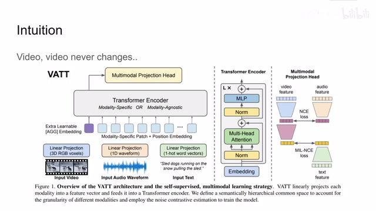
00:01:10–00:02:36 · 画面 003同时呢，在很大概率的情况下，这个视频中出现的画面跟音频还有文字它们是有着很强的这个相关的关系的。比如你看着一辆车开过去，你脑海中呢就自然能够脑补出这个汽车引擎的轰鸣声啊，它行驶的风噪声啊。你看这个狗拉雪橇呢，你就想一个狗在叫，另一个狗说狗别怂啊。那么实际我们在训练的时候呢，我们的模型呢也像人一样呢，拿到三种模态的信息，第一种呢就是 RGB 图像序列，第二种呢是这个声音信息，它是一个 ED 的这个波形。那么第三种呢就是一段话来描述当前视频中的内容。那么一开始呢，本文的思路呢也是把我们的这些信号分别做成小的 patch 或者叫小的 sequence，然后解除它的 embedding 扔到我们的 transformer 里面。那么几层 transformer 之后呢，我们再做这个 projection 把它们投到一个相同的 latent space 里面，最后呢再做我们后续的下游的任务。
那么这边是这个 Transformer Encoder 它的结构，如果你不熟悉它的话，非常推荐你去看我们之前所有的视频。至于这个 Projection Head 我们之后很快会讲到。那么首先来看我们怎么样把这些视频还有音频这些信号能够变成我们输入给 Transformer Encoder 的信号，这个其实大家都非常熟悉了。
00:02:36–00:03:02 · 画面 004
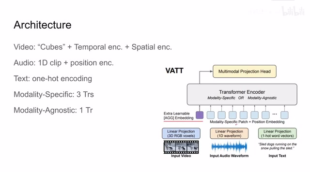
00:02:36–00:03:02 · 画面 004对于视频来说呢，你把它理解成一个像立方体一样的这个 tensor 对吧，然后呢我按照时间啊按照空间给它切成小的 patch，就切成一个小方块，然后呢过 linear layer 就给它投到这个一个像向量一样的这个 vector 里面。对于音频呢，很好办啊，你把它直接切成一块一块，它本来就是一个 ed 的 vector，那你再通过一个 linear projection 就把它变成了这个 embedding vector。
00:03:02–00:03:03 · 画面 005
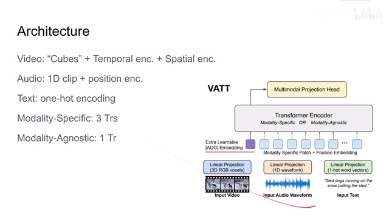
00:03:02–00:03:03 · 画面 00500:03:03–00:03:20 · 画面 006
00:03:03–00:03:20 · 画面 006那对一个文字呢，它不像我们之前的这个像素啊还有音频啊，它这么好量化。那这里呢，作者使用的是 one-hot encoding。首先呢，你统计一下这个数据库里面有多少单词，然后呢你就知道该创建多大一个 vector 作为这个 one-hot encoding。这个 encoding 出来呢，它有一个很长的 vector，但是它全是 0，只有一个位置上是 1 嘛。然后呢，你把它送到 linear layer 里面一样呢，就可以把它转成一个 vector 作为我们的 embedding。这个呢就是作者怎样处理这些原始的数据。
00:03:20–00:03:35 · 画面 007
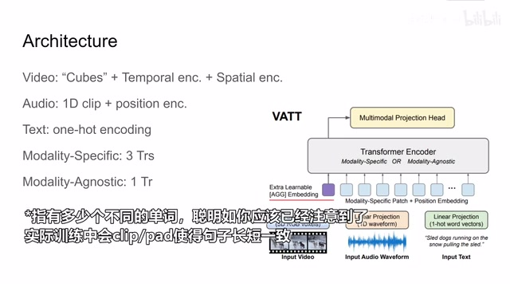
00:03:20–00:03:35 · 画面 00700:03:35–00:04:29 · 画面 008
00:03:35–00:04:29 · 画面 008那把这些数据都切好片变成了 embedding 之后呢，我们就可以把它一个一个的送到我们的 transformer 里面了。这里呢跟其他的方法一样，作者呢还是增加了一个 classification token。那么最后我们使用的 feature 呢是从这个 classification token 中它所代表的 feature 中拿出来直接用的。这个呢都是很常规的操作。当然你在做 projection 之前呢记得加上相应的 positional encoding。那么然后呢我们就看这个 transformer 了。
这里呢作者提出了两种方案一种是 modality specific 另一种呢是 modality agnostic 那一层它的名字上就可以看出来在这个配置下面呢我们用三个 transformer 对吧对于三种不同的模态我们一个模态用一个 transformer 然后呢把他们特征提出来而对于这种配置呢我们使用一个 transformer 来解决所有的问题那么这样子呢我们已经定义好了模型定义好了这个数据呢怎么做预复理那等一下我们把 loss 给它规定好是不是就可以拿去直接训练了呢
00:04:29–00:04:30 · 画面 009
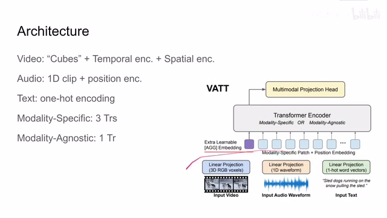
00:04:29–00:04:30 · 画面 00900:04:30–00:04:56 · 画面 010
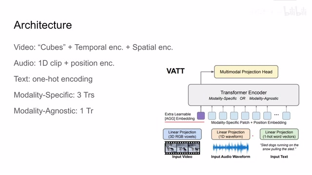
00:04:30–00:04:56 · 画面 010这个想法是非常美好的，但是呢我们发现一个问题，因为我们的 video 和 audio 啊，特别是这个视频它的维度是非常高的，我们这样切块的话呢，必然会导致我们这些 token 的数量很多，这就导致我们的 software 计算起来非常慢，而且呢会占用很大的显存。那么为了解决这个问题呢，作者说我们把 dropout 的概念呢引入到这里。这里呢，作者提出的叫 drop token，它的原理非常简单，就是我们在训练的时候呢，特别是我们在训练高分辨率的这个原始数据的时候呢
00:04:56–00:05:09 · 画面 011
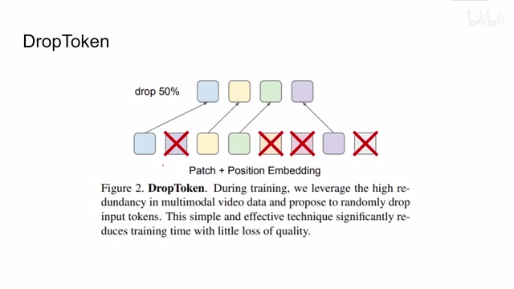
00:04:56–00:05:09 · 画面 011我们就随机的去掉一些 input token 这样呢我们的 transformer 一次只处理这个原始序列中一半的这个 token 那它的处理速度呢就会变得非常快占用的内存呢也会小很多这个呢是工程实践上的一个小 trick 那么随后呢我们就要看作者怎么样定义这个 loss 这里呢因为我们进行的是 self-supervised learning 我们没有 label 我们唯一能利用的信息呢就是我们的视频和音频还有文字它们这个对齐的这个性质
00:05:09–00:05:11 · 画面 012
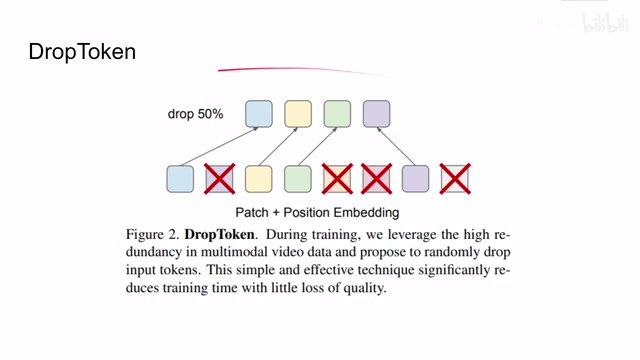
00:05:09–00:05:11 · 画面 01200:05:11–00:05:22 · 画面 013
00:05:11–00:05:22 · 画面 01300:05:22–00:05:58 · 画面 014
00:05:22–00:05:58 · 画面 014那么什么是对齐呢，就是我们希望我们的模型能告诉我们这个视频啊，这个音频还有相应的文字描述它们是不是来自同一时刻的同一个视频。那么通过这种形式呢，我们就可以在不借助外部 label 的情况下直接做 contrastive learning，对我们的样本呢进行学习。那么这里呢，你可以先假设我们已经把 video 啊，audio 还有我们的 text 都投影到一个 latent space 里面了。我们呢通过计算它们之间的距离来表达它们的相似程度。
00:05:58–00:06:01 · 画面 015
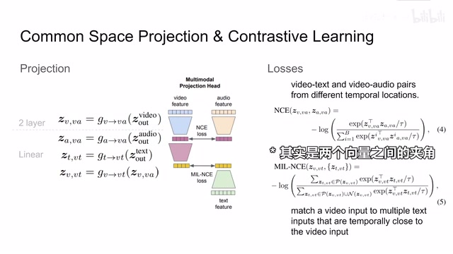
00:05:58–00:06:01 · 画面 015这里呢，我们就可以直接使用这个 NCE loss。那么里面呢是使用向量夹角的形式呢来描述两个样本它们的相似程度。这个套呢就是 temperature parameter，用来控制我们整个 distribution。那么 NCE 呢就是 positive sample 比上所有 sample 它们的 similarity 的和。这里呢，我们之前介绍了很多 self-supervised learning 的论文了，NCE 也提了很多次了，我们就不再详细的说了。但是这里呢，我们还有一个小的 trick，对于我们的 video 和 audio 来说呢，因为它们是贯穿整个视频的
00:06:01–00:08:01 · 画面 016
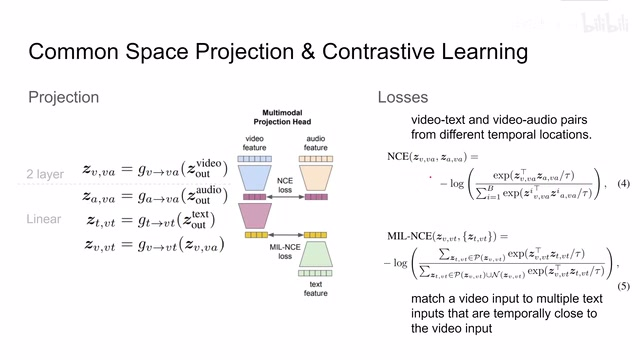
00:06:01–00:08:01 · 画面 016所以呢，我们很容易就找到他们的对齐，我们直接使用 NCE 呢就可以了。而对于 video 和 text，就是视频和文本呢，有时候文本呢太过稀疏了，你可能这段视频里面就没有文本，那这个时候怎么对应呢？这里呢做着使用这个 MIL-NCE，也就是 Multiple Instance Learning NCE，他思想就是我这段视频虽然跟我当前时刻的这个文本这块可能没有文本，但是呢，我可以往前看看，往后看看，找找附近的文本，如果有合适的话，我也认为它是 positive sample。这样子呢，就解决了说我们的文文比较稀疏啊和视频对不上这么一个问题。那么这两种 NCE 呢，就是我们在对比中要使用的 Loss。这个 Vanilla NCE 呢，是我们对比视频和音频时候用到的，而这个 MIL-NCE 呢，是我们对比这个视频和文本时候用到的。
那么就像刚才我们说的，我们首先把视频和音频的 feature 呢全部投到一个 latent space 里面，然后呢再做这根 CE 的对比。那么具体在本文中，我们是怎么样做这个投影的呢？可以看到，我们从这个 transformer 里面拿到了 video feature，拿到 audio feature，然后呢拿到了这个 text feature。我们呢先用两层 mlp 把这个 video feature 呢变到我们的这个 video 和 audio 他们的 latent space 里面。那就是你可以看到从这个地方呢变到这个过程。
那么相似呢，我们把这个 audio feature 呢也变到这个 latent space 里面。不过我们这个只使用了一层 linear transformation。那么这样呢，在这个 video audio 的 latent space 里面呢，我们就可以对比他们之间的这个 NCE 了。那么在此基础之上呢，作者呢把这个 audio 的 feature，那么在此基础之上呢，作者把这个 video 的 projection 呢再次做了一次 transformation，把它投到了这个 video 和 text 的 latent space 里面。
00:08:01–00:08:27 · 画面 017
00:08:01–00:08:27 · 画面 017你可以看到这里，它是使用了 video 在 video 和 audio 的 latent space 中的 representationprojection，给它投到了 video text latent space 里面。那么相似的，我们要把 text feature 也是做一个投影。那么在 space 里面，我们做 mil nce loss。这样子，我们就把这三种模态特征都串起来了。然后你把这两 loss 一定比例组合，这个就是我们用来训练 model 的时候的 loss。
00:08:27–00:08:48 · 画面 018
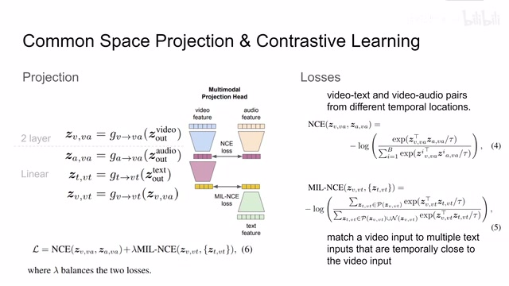
00:08:27–00:08:48 · 画面 018那么以上呢，就是本文如何从原始的数据处理到我们的 feature 到 projection，最后的 loss 怎么定义的。有了这些东西呢，我们就可以拿来训练了。那么直接看到作者汇报的结果吧。这里呢，作者汇报的大部分测试呢，都是先按照我们的 self-supervised learning 的方法做 pretrain，然后呢，再针对不同的任务进行 fine-tune。比如说这里测试的第一个任务呢，是 video action recognition，那可以看到呢，本文提出的方法这个模型最大的这个方法呢，outperform 之前的这些方法。
00:08:48–00:09:20 · 画面 019
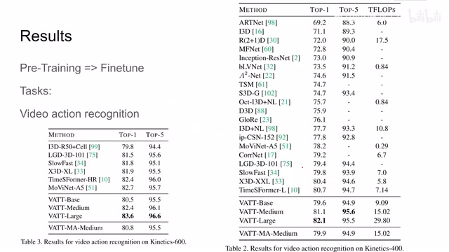
00:08:48–00:09:20 · 画面 019当然，因为它的模型很大嘛，计算量也是很大的，这也没有办法的事情。然后呢，我们发现如果三个模态呢都使用同样的 Transformer 呢，它的性能呢并不会得到提升。所以说呢，还是不同的模态用各自不同的 Transformer 比较好。那么其他的任务呢，包括 Audio Event Classification、Zero-Shot Video Retrieval，这个呢就是你给系统一个文本，Model 呢在 Latent Space 中找到和这个文本最接近的几个 Video，还有这个 Image Classification。我们先看这个 Image Classification
00:09:20–00:09:57 · 画面 020
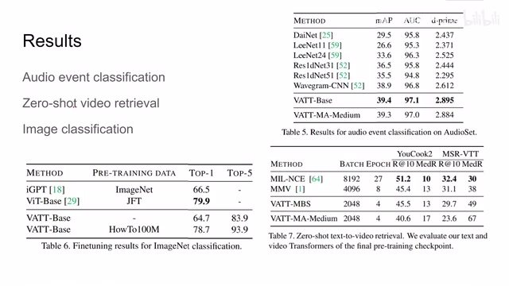
00:09:20–00:09:57 · 画面 020可以看到，即便我们拿的是另一个数据集，是一个视频的数据集，我们用视频做了培训之后，本文的结果依然能够和 Transformer 能相媲美。这个是 Audio Event Classification 的数据，那么这边是 Video Retrieval，作者表示这个任务对 Batch Size 是非常敏感。现在模型的性能已经和 MMV 差不多了，但是使用了少一半的 Batch Size。那么除去 Dunton 的这种测试，作者还做了 Linear Evaluation。
00:09:57–00:10:16 · 画面 021
00:09:57–00:10:16 · 画面 021就是我把前面的 encoder 锁住，只加一层 linear layer 来看它的性能。这里是这个 video action recognition 的结果，可以看到本文使用这么弱的分类器，依然能够和这些 supervised 的方法表演，本文的方法还是不错的。那么这边的可视化你就可以看出来，本文是怎么样把输入的这些样本，它们在原始数据的 domain 里面是非常相近的分不开的，然后变到我们 latent space 里面，它们的聚集区分就变得非常明显了。
00:10:16–00:10:17 · 画面 022
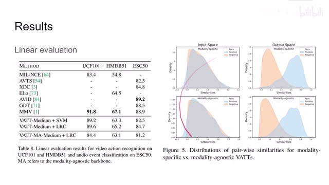
00:10:16–00:10:17 · 画面 02200:10:17–00:10:31 · 画面 023
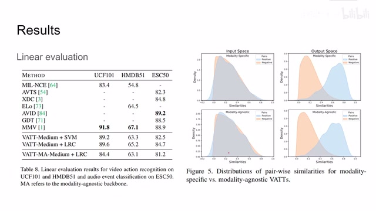
00:10:17–00:10:31 · 画面 023那么除去这些结果呢，作者还做了一个简单的 ablation。首先呢是测试了一下我该使用什么样大小的图像啊，怎么样切片啊，还包括音频的尺寸啊，这个 representation 啊等等等等这些基础的参数的搜索嘛。这里呢列了一个表。那么还有一个呢就是这个 drop token，那么你可以看到随着 drop rate 的增加，模型的计算量呢是显著的下降，但是性能受到影响呢，特别是从 25%到 50%这一块不是特别的大。
00:10:31–00:10:34 · 画面 024
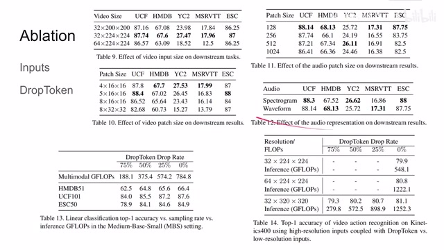
00:10:31–00:10:34 · 画面 02400:10:34–00:10:44 · 画面 025
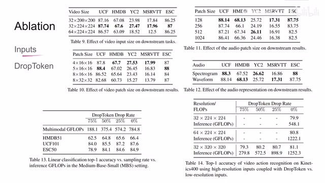
00:10:34–00:10:44 · 画面 02500:10:44–00:10:48 · 画面 026
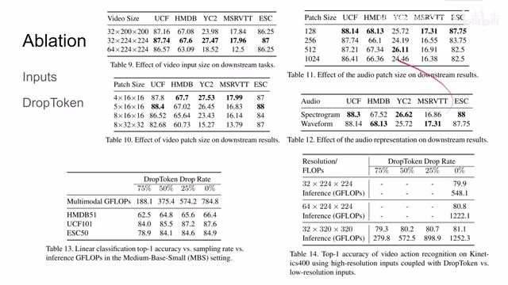
00:10:44–00:10:48 · 画面 02600:10:48–00:10:58 · 画面 027
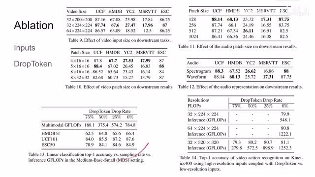
00:10:48–00:10:58 · 画面 02700:10:58–00:11:05 · 画面 028
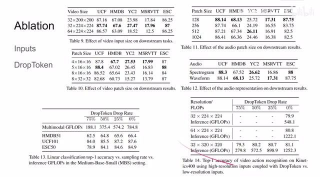
00:10:58–00:11:05 · 画面 028那么在这一组数据中呢，作者告诉我们，如果你的视频的分辨率很高，有很多数据要处理，你宁可能使用一个相对较高的这个 drop rate。你看到这一组数据，你看到这一组数据它是像素很高，但是呢我们使用 50%的 drop rate，它的计算量跟这个像素相对较低但是不使用这个 drop token 的这个模型的计算量相当。但是呢使用高分辨率加 drop token 的这一组实验呢，性能呢是要比它要好的。
00:11:05–00:11:58 · 画面 029
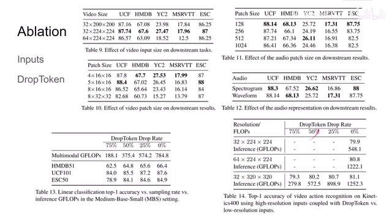
00:11:05–00:11:58 · 画面 029好的，那么以上就是我对这篇论文的简单的分析。这篇论文的思路呢，也非常直白，做法也很工整，但是比较可惜的是它只提出了两种配置，一种呢是使用三个 transformer，一种是只使用一个 transformer。那么其实很好奇，假如说它像 ELO 一样用三个结构相同的 transformer 来去做不同的模态，但是这三个模态之间呢，我用这个 distillation 用蒸馏的方法来帮助他们传递信息，不知道这样呢会有什么样的表现。那么我们还是期待它后续的工作吧。
好了，那么感谢你的收看，再见。
00:11:58–00:11:58 · 画面 030
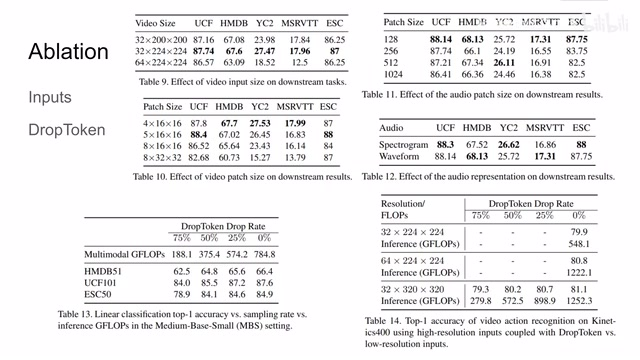
00:11:58–00:11:58 · 画面 030转写与来源说明 · 0 个自动复核提示
保留 27 个原始语音片段，0 个片段触发自动复核提示。提示仅用于定位可能的术语、重复或识别问题，不等于已确认错误。
讲解画面为源视频截图（640×360），不是可编辑 PPT 文件。全片按每秒 2 帧扫描内容变化，逐步展开页保留；连续动画保留代表画面。清晰度受源视频限制。
原视频：paper/合集_2026-10-16_多模态语言模型/[论文简析]VATT Video-Audio-Text Transformer[2104.11178].mp4
SHA-256：c5c0de31e7f97cabce1c8d888e3996dfb49796d95d6df715249f6a9dcf7566a4
全文按视频语音与画面制作。原论文可从上方链接下载；完整资料包保留全文、原始逐字稿、字幕和校对记录。